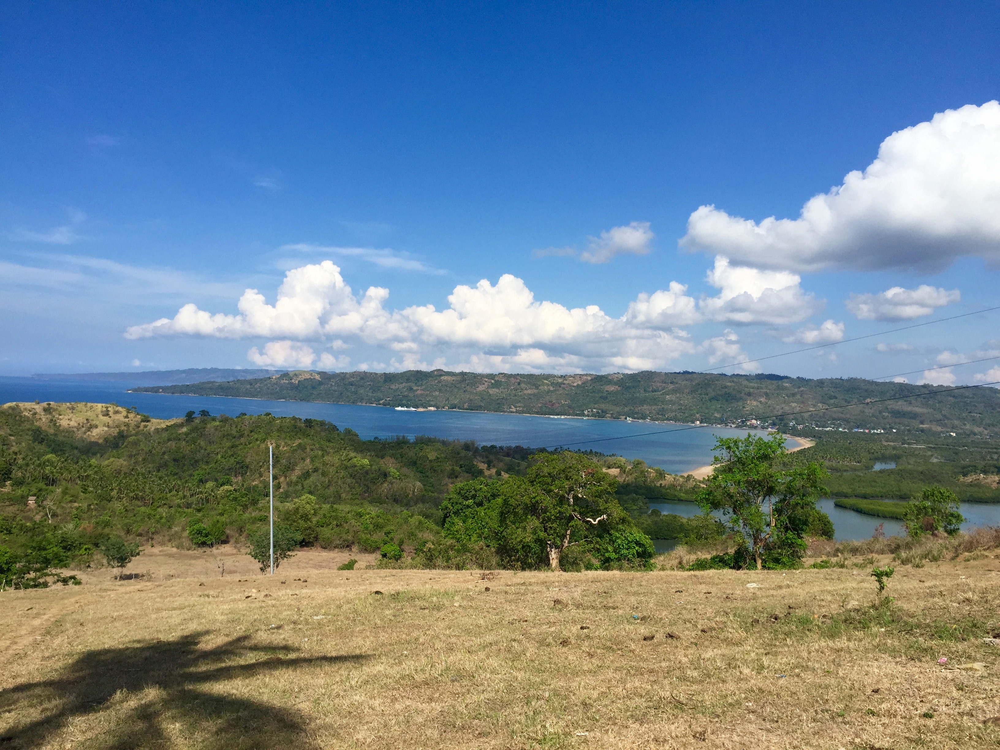

Work
Dominic works for Michigan State University Inforation Technology Services. He works on the Messaging Team. Primary responsibilites include handling incoming request tickets and making sure that they are assigned and handled accordingly. While on the Messaging Team, Dominic also is responsible for creating PowerShell scripts used to help automate daily tasks and save team members times. Some of these scripts include creating an email message notifying technicians when their tickets have gone over 20 days opened.
